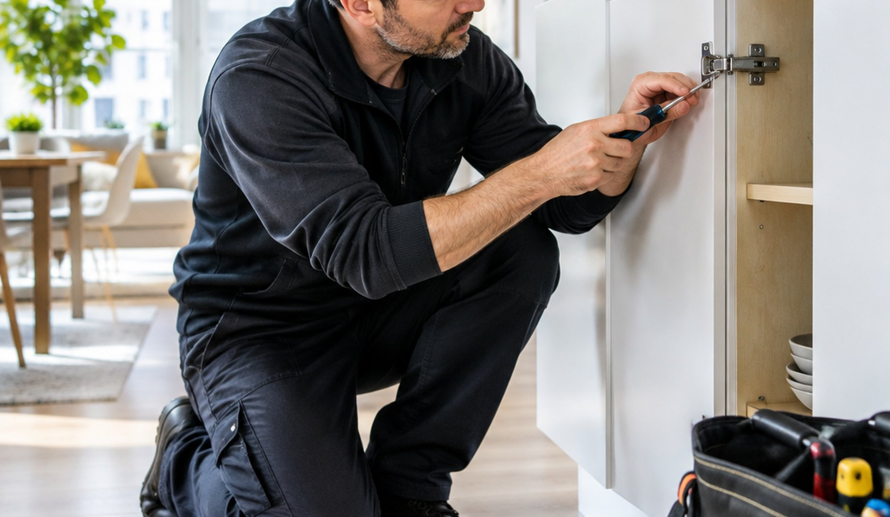
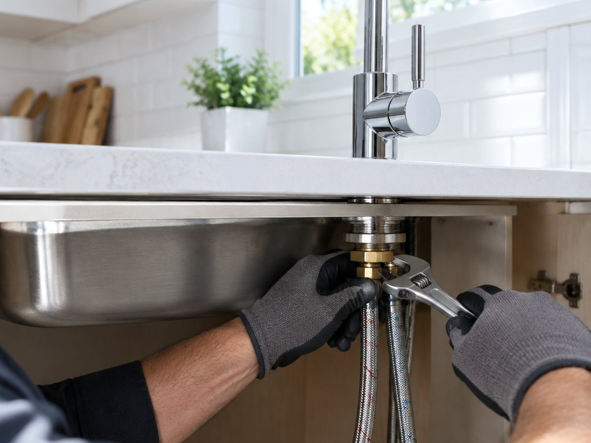

Домашний мастер на час
Мелкие бытовые работы, до которых не доходят руки: отрегулировать фасады, собрать мебель, подкрутить ручки, установить кран, подшить балкон, заменить розетки.

То, из-за чего обычно не вызывают бригаду: одна дверца, одна розетка, один кран.
Приезжаю со своим: шуруповёрт, уровень, ключи, расходники для типовых работ.
Можно накопить несколько дел и решить их за один заход.
Минск, Фрунзенский район. По соседним районам — по договорённости.
Бытовые работы по дому
Шесть направлений, с которых чаще всего начинается разговор. Если работы нет в списке — всё равно напишите.
Сборка, регулировка, фурнитура.
- собрать шкаф или комод
- отрегулировать фасады
- подкрутить и заменить ручки
- петли и доводчики
Замена и подключение.
- установить кран или смеситель
- заменить сифон
- подключить стиральную машину
- устранить подтекание
Мелкая электрика.
- заменить розетку
- заменить выключатель
- повесить светильник
- подключить люстру
Подшивка и мелочи.
- подшить балкон
- полки и сушилки
- крепёж и полки
Навеска на стену.
- полки и шкафчики
- карниз для штор
- зеркало и картины
Разное по дому.
- уплотнители и заглушки
- мебельные колёса
- прочая мелкая работа
Четыре шага
Без длинных согласований: написали, договорились, сделали.
- 01Пишете, что нужно
Описываете работу и, если важно, прикладываете фото и размеры.
- 02Договариваемся
Обсуждаем объём и время, когда удобно приехать.
- 03Делаю работу
Приезжаю со своим инструментом и выполняю то, о чём договорились.
- 04Проверяем вместе
Смотрите результат: дверца закрывается, вода не капает, розетка работает.



Частые вопросы
Полный список — в разделе «Вопросы».
Напишите мастеру
Опишите, что нужно сделать: отрегулировать фасады, собрать мебель, установить кран, заменить розетки, подшить балкон.
Фото и размеры сильно ускоряют дело: по ним проще сказать по срокам.
- Фрунзенский район Минска
- мелкие работы без бригады
- свой инструмент
- списком за один заход
Написать мастеру
Опишите работу, добавьте фото и размеры, если они важны. Отвечу и предложу удобное время.
Опишите работу — договоримся о времени
Мелкие бытовые работы: фасады, мебель, ручки, кран, розетки, балкон. Пишите, что нужно сделать, и приложите фото — так проще сразу сказать по срокам.